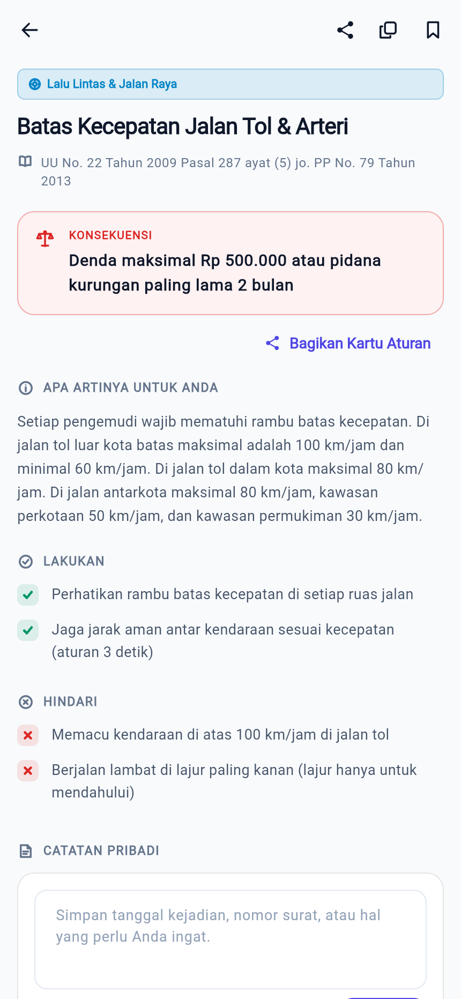
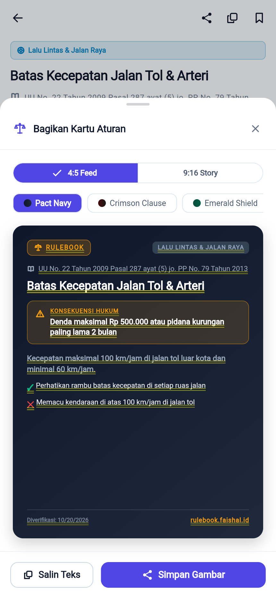
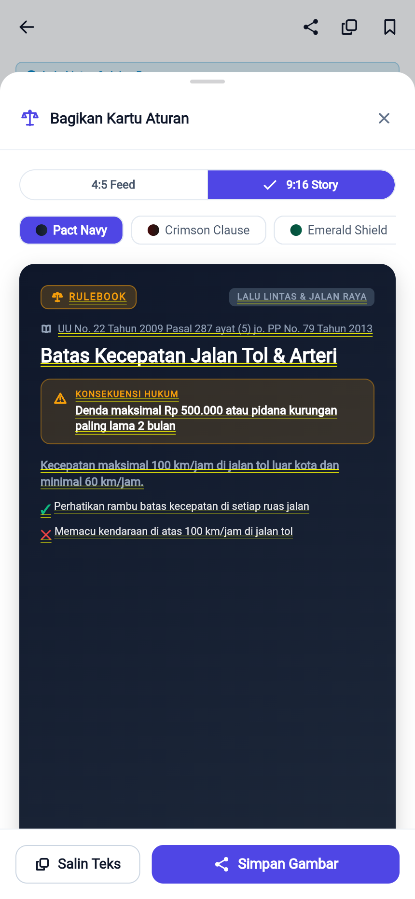

BAST rulebook · BAST-FLOW-RUL-03
Membagikan butir aturan
FLOW-RUL-03ROL-001MOD-001EP-001US-007FR-007
Pengguna membuka butir aturan lalu menyiapkan Kartu Aturan untuk dibagikan ke teman, lengkap dengan dasar hukumnya.
Langkah 1: Buka butir aturan
Ketuk kartu Batas Kecepatan Jalan Tol & Arteri pada layar Aturan.

Langkah 2: Siapkan kartu aturan
Ketuk Bagikan Kartu Aturan. Pilih rasio (4:5 Feed / 9:16 Story) dan tema kartu; pratinjau memuat judul, sanksi, dan dasar hukum.

Langkah 3: Kirim atau salin
Ketuk Simpan Gambar untuk menyimpan/membagikan kartu, atau Salin Teks untuk menempel ringkasan beserta dasar hukumnya di chat.

Hasil uji
| TC | Jenis | Lapis | Skenario | Hasil |
|---|---|---|---|---|
FLOW-RUL-03-T01 | positive | unit | pratinjau kartu memuat judul dan dasar hukum butir | pass |
FLOW-RUL-03-T02 | negative | unit | butir yang tidak ada tidak dapat dibuka untuk dibagikan | pass |
FLOW-RUL-03-T03 | edge | unit | semua butir di 8 bahasa punya judul dan sanksi tidak kosong untuk kartu | pass |
FLOW-RUL-03-T04 | corner | unit | Salin Teks menaruh judul, dasar hukum, dan tautan app di clipboard | pass |
Direkam terhadap flutter build web (lokal) oleh FLOW-RUL-03-T01.